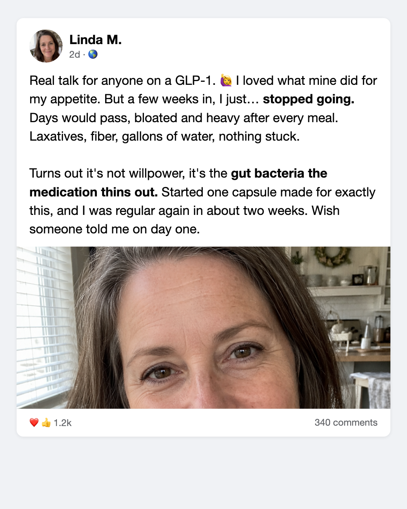
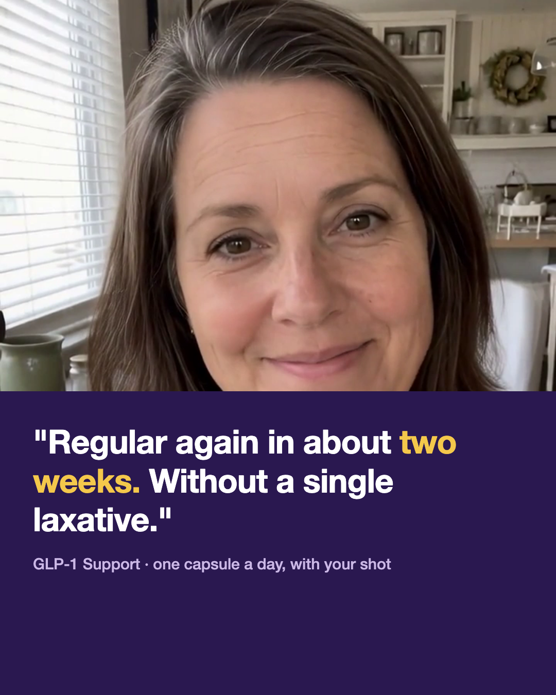
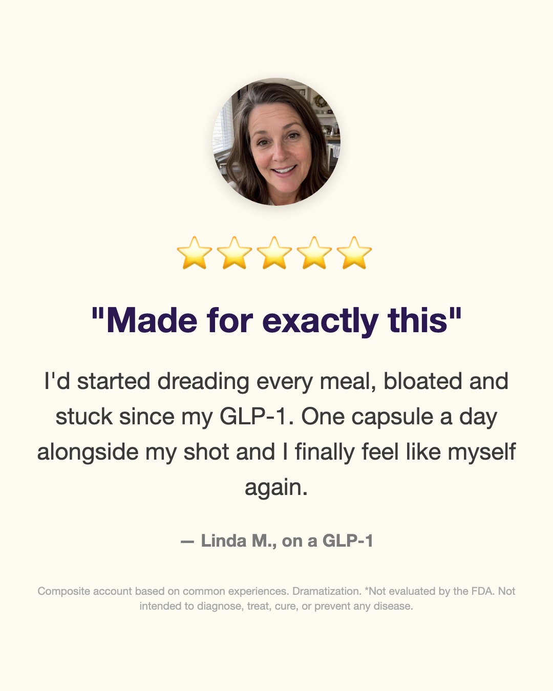
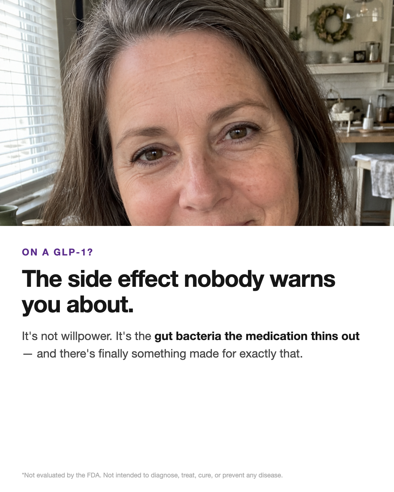
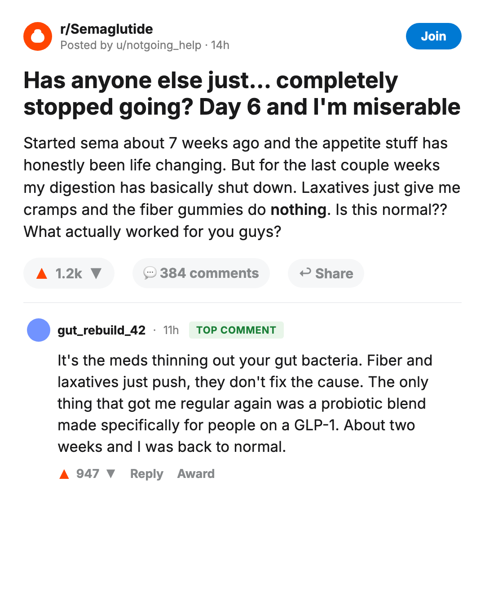
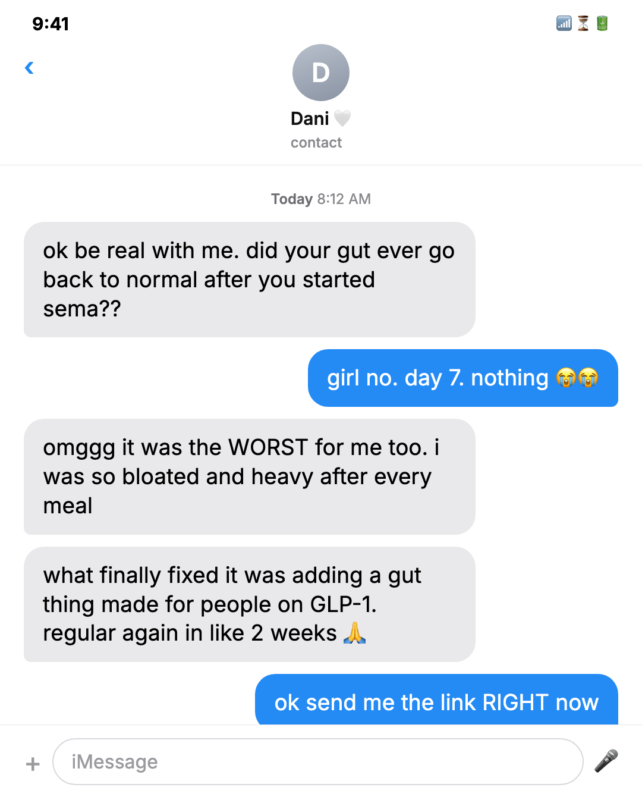
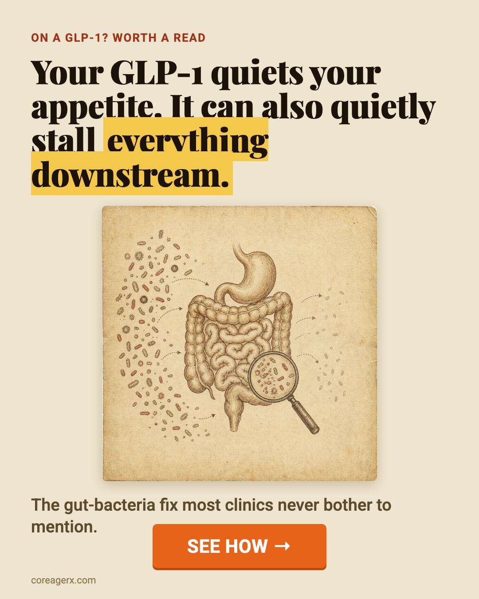
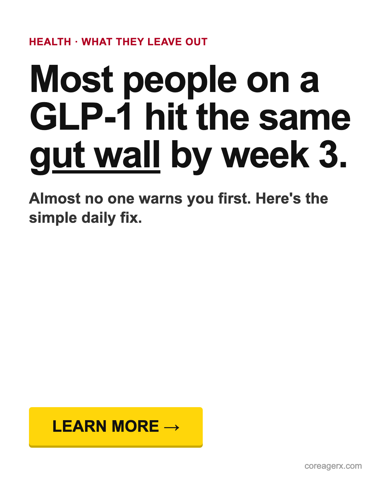
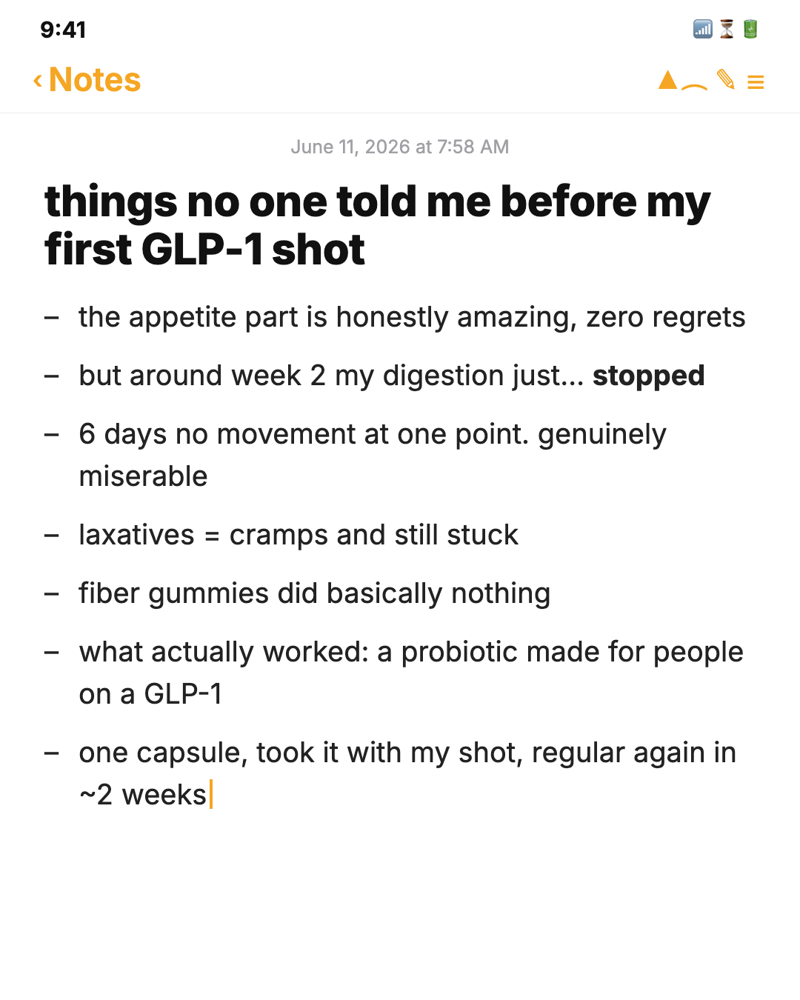
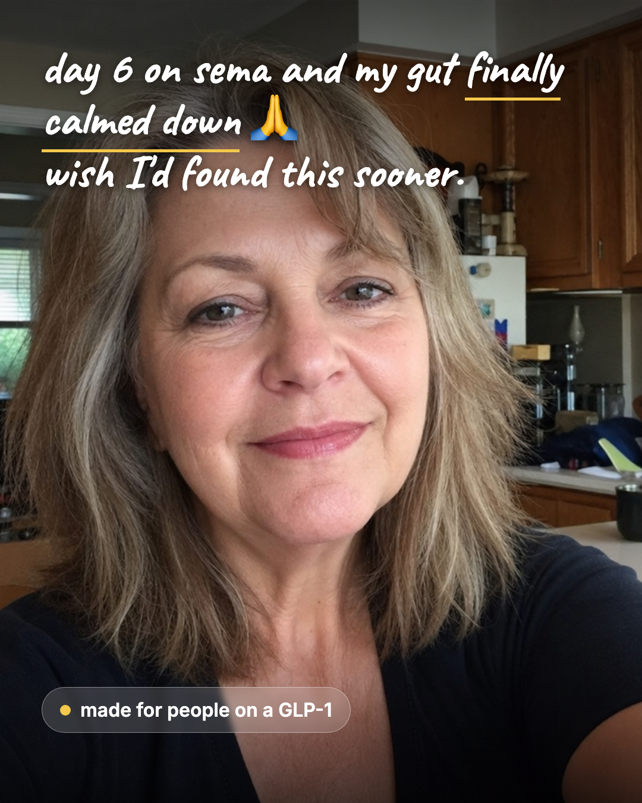

A single relatable persona ("Linda," ~50, on a GLP-1) carries one problem across formats: the digestive side effect nobody warns you about. Talking-head video, a b-roll cutaway alternative, and a set of native statics — all message-matched to the same advertorial angle.
~80s testimonial, vertical 9:16. Opens on an Instagram question-sticker hook, burned captions throughout for sound-off viewing. Two cuts of the same script and voice.
Linda to camera, lip-synced. The primary cut.
Same cut with product cutaways layered over the moments she names them.
The recurring avatar as a native testimonial persona — the system competitors run from fake profiles, here composite-disclosed. 1080×1350.




Scroll-native formats that don't read as ads — each pairs with the advertorial LP via utm_content. 1080×1350.





